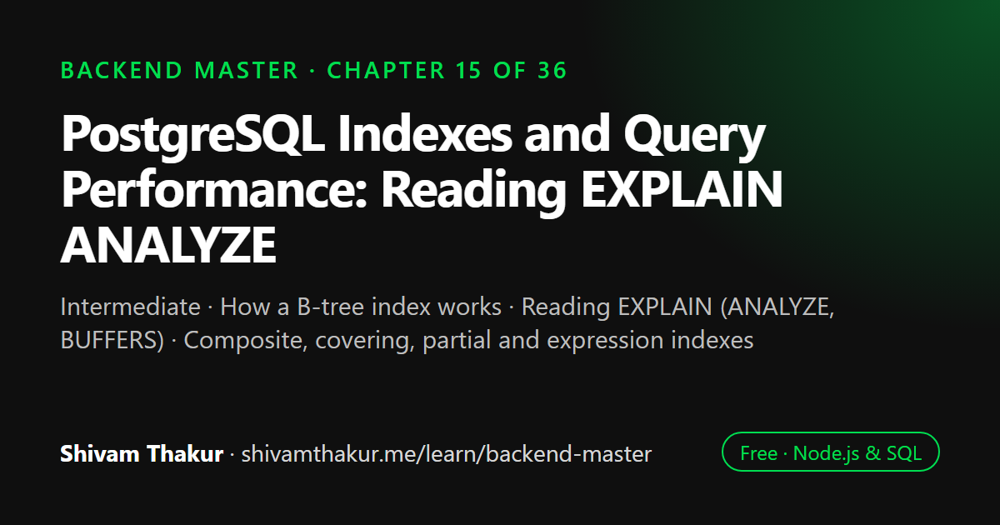

Chapter 15 of 36 · Intermediate
PostgreSQL Indexes and Query Performance: Reading EXPLAIN ANALYZE
Indexes and Query Performance — Making Queries Fast (and Knowing Why)

Indexes turn full table scans into a few page reads. On a one-million-row table this chapter measures an index cutting a query from 107 ms to 0.28 ms, shows how to read EXPLAIN ANALYZE, explains why the planner sometimes ignores an index, and covers composite, covering, partial, expression, GIN and BRIN indexes, the N+1 problem and pg_stat_statements.
In this chapter you will learn
- How a B-tree index works
- Reading EXPLAIN (ANALYZE, BUFFERS)
- Composite, covering, partial and expression indexes
- Why the planner ignores an index
- Finding slow queries and fixing N+1
15.0 Why This Chapter Matters
Almost every "the site is slow" ticket in a backend job ends in the same place: a database query that reads far more data than it needs. The fix is rarely a bigger server. It is usually a one-line CREATE INDEX, or rewriting a condition so the index you already have can be used.
But "add an index" is dangerous folk wisdom without understanding:
- An index that is never used still slows every write and wastes disk.
- An index you think is helping may be silently ignored by the planner because of one innocent-looking function call.
- The same query can be instant on your laptop's 1,000 rows and a disaster on 100 million.
This chapter teaches you to measure instead of guess. You'll learn what an index physically is, read EXPLAIN ANALYZE like a story, and fix the classic problems on a real 1,000,000-row table, with before/after numbers.
By the end you'll be able to:
- Explain how a B-tree index works and what it can and cannot do.
- Read
EXPLAIN (ANALYZE, BUFFERS): scan types, estimates vs actuals, buffers. - Predict when the planner ignores an index (and why that's often correct).
- Design composite, covering, partial and expression indexes, and pick GIN/BRIN when B-tree isn't right.
- Count the cost of an index (write amplification, size, unused indexes).
- Fix OFFSET pagination, stale statistics, missing foreign-key indexes, and the N+1 query problem.
- Find slow queries with
pg_stat_statements.
15.1 The Mental Model: A Book and Its Index
A table is a heap of 8 KB pages holding rows in roughly insertion order (Ch 12). Our orders table: 1,000,000 rows in 8,334 pages (65 MB).
Question: "Find all orders for user 1234."
Without an index, the database must read every page and test every row: a sequential scan. Like finding every mention of a name by reading a 1,000-page book cover to cover.
With an index, it does what you do with the index at the back of a book: look up "1234" in a small, sorted structure that says "it's on pages 12, 88 and 301", then jump to just those pages.
Here is the real difference (query: SELECT * FROM orders WHERE user_id = 1234, 28 matching rows):
-- no index
Seq Scan on orders (cost=0.00..20834.00 rows=21 width=37) (actual time=0.054..106.966 rows=28 loops=1)
Filter: (user_id = 1234)
Rows Removed by Filter: 999972
Buffers: shared hit=8334
Execution Time: 107.180 ms
-- with CREATE INDEX orders_user_idx ON orders (user_id)
Bitmap Heap Scan on orders (cost=4.59..85.69 rows=21 width=37) (actual time=0.146..0.193 rows=28 loops=1)
Recheck Cond: (user_id = 1234)
Heap Blocks: exact=28
Buffers: shared hit=31 read=3
-> Bitmap Index Scan on orders_user_idx (actual time=0.132..0.132 rows=28 loops=1)
Index Cond: (user_id = 1234)
Execution Time: 0.279 ms| No index | Index | |
|---|---|---|
| Pages touched | 8,334 (the whole table) | 34 |
| Rows examined & discarded | 999,972 | 0 |
| Time | 107 ms | 0.28 ms (≈380× faster) |
The index is 7,800 kB: about 12% the size of the table. That is the trade: extra disk and slower writes in exchange for fast lookups (§15.9).
Why the "pages touched" number matters more than milliseconds: time depends on your hardware and what's cached; buffers (page reads) measure the actual work. When you compare two plans, compare buffers.
15.2 How a B-tree Works (Just Enough)
PostgreSQL's default index type is the B-tree. Picture a sorted, shallow tree:
[ root: 2000 | 4000 ]
/ | \
[ 500 | 1000 | 1500 ] [ 2500 | 3000 | 3500 ] [ 4500 | 5000 ... ]
/ | | \ ... ...
[leaf pages: sorted keys + pointers to table rows (ctid)] ←→ linked left/right- Keys are kept sorted. Searching is a binary-search-like walk from the root down: ~3–4 page reads even for hundreds of millions of rows.
- Leaf pages are linked, so a range (
BETWEEN,>,<) and sorted order come almost for free: find the start, then walk right. - Each leaf entry holds the key and a pointer (
ctid) to the table row.
What a B-tree index can serve
| Query shape | Uses the index? |
|---|---|
WHERE col = 5 |
Yes |
WHERE col > 5, <, BETWEEN |
Yes (range walk) |
WHERE col IN (1,2,3) |
Yes |
ORDER BY col [LIMIT n] |
Yes: no sort needed |
WHERE col LIKE 'abc%' (prefix) |
Yes, only with the right operator class/collation (§15.7) |
WHERE col IS NULL |
Yes |
WHERE col LIKE '%abc' (contains) |
No → trigram index (§15.7) |
WHERE lower(col) = 'x' |
No, unless the index is on lower(col) (§15.7) |
WHERE col + 1 = 5 |
No (function of the column) |
The rule behind the "No" rows: the index is sorted by the stored value of the column. If your condition wraps the column in a function or arithmetic, the database can't use the sort order, because it doesn't know where lower(col) = 'x' falls in a list sorted by col.
The primary key already has one
PRIMARY KEY and UNIQUE automatically create a B-tree index (our orders_pkey is 21 MB). Foreign keys do not (§15.10).
15.3 Reading EXPLAIN
EXPLAIN shows the plan the database chose. It does not run the query. EXPLAIN ANALYZE runs it and adds real timings. BUFFERS adds page counts.
EXPLAIN SELECT * FROM orders WHERE user_id = 1234; -- estimates only
EXPLAIN (ANALYZE, BUFFERS) SELECT * FROM orders WHERE user_id = 1234; -- run it, measure it⚠️
EXPLAIN ANALYZEreally executes the statement. For anUPDATEorDELETEit really changes data. Wrap it:BEGIN; EXPLAIN ANALYZE UPDATE …; ROLLBACK;. (Standard practice; I did not run a write example in this chapter.)
The anatomy of one node
Bitmap Heap Scan on orders (cost=4.59..85.69 rows=21 width=37) (actual time=0.146..0.193 rows=28 loops=1)
│ │ │ │ │ │ │ │
│ │ │ │ │ │ │ └ times this node ran
│ │ │ │ │ │ └ ACTUAL rows returned
│ │ │ │ │ └ ACTUAL ms: first row .. last row
│ │ │ │ └ average row width in bytes
│ │ │ └ ESTIMATED rows
│ │ └ estimated total cost
│ └ estimated startup cost
└ what the node doesCosts are in arbitrary units (not milliseconds) and are only comparable within one planner; they exist so the planner can compare alternative plans. Rows: estimate vs actual is the most valuable comparison on the page: here the planner expected 21 rows and got 28, close enough. When they differ by 10× or 1000×, the statistics are wrong (§15.12) and the plan may be too.
Reading order
Plans are trees, read from the innermost/most-indented node outward; each node feeds its parent.
Aggregate ← 3. count them
-> Seq Scan on orders ← 2. keep rows passing the filter
Filter: (date(created_at) = ...)The scan types you'll meet
| Node | Meaning | Good when |
|---|---|---|
| Seq Scan | Read the whole table | You need a large fraction of the rows, or the table is tiny |
| Index Scan | Walk the index, fetch each row from the table | Few rows; or rows in index order with LIMIT |
| Index Only Scan | Answer from the index alone (no table visit) | The index covers every column you need (§15.6) |
| Bitmap Index Scan + Bitmap Heap Scan | Collect all matching row locations from the index, sort them by page, then visit each page once | A medium number of rows scattered across pages |
You'll notice our 28-row query used a bitmap scan, not a plain index scan: with rows scattered over 28 different pages, collecting locations first and visiting pages in physical order is cheaper than bouncing around. You don't choose this; the planner does.
15.4 When the Planner Ignores Your Index (and Why That's Usually Right)
15.4.1 Low selectivity: the index would be slower
Our status column is skewed: 80% delivered, 8% shipped, 6% paid, 5% pending, 1% cancelled. We create CREATE INDEX orders_status_idx ON orders (status) and ask for each:
status = 'delivered' (80% of rows)
Seq Scan on orders (cost=0.00..20834.00 rows=801167 …) (actual time=0.013..149.828 rows=799588 …)
Execution Time: 181.284 ms ← index IGNORED
status = 'paid' (6%)
Bitmap Heap Scan … Heap Blocks: exact=8326 Execution Time: 39.787 ms
status = 'cancelled' (1%)
Bitmap Heap Scan … Heap Blocks: exact=5831 Execution Time: 14.418 msFor 80% of the table, reading the index and then the table is more work than just reading the table once. The planner is right to ignore the index. For 'paid' (6%) it used the bitmap path and read 8,326 pages, nearly the whole table anyway, which is why it took 40 ms rather than a millisecond.
Honest note. I forced the index for the 80% case (
SET enable_seqscan = off; SET enable_bitmapscan = off) to prove the planner wrong. It did not lose here: 184.9 ms vs 181.3 ms. Because the whole 65 MB table sat in memory cache, random reads were nearly free. On a cold cache or a table larger than RAM, random page reads are far more expensive and the sequential scan would win clearly. The planner's cost model assumes a cache-cold world. Conclusion: don't fight the planner on a warm laptop; judge on realistic data and caches.
The lesson: an index on a low-cardinality or heavily skewed column (status, is_active, gender) is usually useless for the common value. It is useful for the rare value, which is exactly what a partial index exploits (§15.7).
15.4.2 Functions on the column ("non-sargable" conditions)
SELECT count(*) FROM orders WHERE date(created_at) = '2025-06-15';Aggregate
-> Seq Scan on orders (actual time=85.865..204.720 rows=2769 loops=1)
Filter: (date(created_at) = '2025-06-15'::date)
Rows Removed by Filter: 997231
Execution Time: 204.991 msEven though created_at is indexed, date(created_at) is a different value than what's stored, so the index can't help. Rewrite the condition so the column stands alone, using a half-open range:
SELECT count(*) FROM orders WHERE created_at >= '2025-06-15' AND created_at < '2025-06-16';Aggregate
-> Index Only Scan using orders_created_idx on orders (actual time=0.152..0.559 rows=2769 loops=1)
Index Cond: ((created_at >= '2025-06-15 00:00:00+00') AND (created_at < '2025-06-16 00:00:00+00'))
Heap Fetches: 0
Execution Time: 0.819 ms205 ms → 0.8 ms (250×), the same answer (2,769). "Sargable" (Search ARGument able) just means "written so an index can be used." The same rule applies to WHERE total_minor / 100 > 50 (use total_minor > 5000), WHERE lower(email) = … (fix with an expression index, §15.7), and WHERE col::text = ….
15.4.3 Other reasons an index isn't used
- Stale statistics (§15.12).
- The table is tiny: a seq scan of one page beats an index lookup. Don't test indexes on 100 rows.
- Type mismatch, e.g., comparing an
intcolumn to anumericparameter or a text column to a number; the database may cast the column, defeating the index. (Described from experience; not run here. Check withEXPLAIN.) - A leading wildcard
LIKE '%x'(§15.7). - Composite index used from the wrong column (§15.5).
15.5 Composite (Multi-Column) Indexes
A composite index is sorted by its first column, then by the second within each first-column value, and so on: like a phone book sorted by last name, then first name.
We replaced the single-column index with CREATE INDEX orders_user_created_idx ON orders (user_id, created_at DESC) and tried three queries.
Case 1: equality on the leading column
WHERE user_id = 1234 → Bitmap Index Scan on orders_user_created_idx 0.241 ms(One composite index can replace the single-column (user_id) index. We dropped orders_user_idx and nothing got slower.)
Case 2: leading-column equality + ORDER BY the second
"Show a user's 5 most recent orders": the most common query in any shop.
SELECT * FROM orders WHERE user_id = 1234 ORDER BY created_at DESC LIMIT 5;Limit (actual time=0.029..0.037 rows=5 loops=1)
-> Index Scan using orders_user_created_idx on orders (actual rows=5 loops=1)
Index Cond: (user_id = 1234)
Execution Time: 0.083 msThere is no Sort node. The index already stores this user's orders newest-first, so the database reads the first 5 entries and stops. Work done is independent of how many orders the user has.
Case 3: filtering only on the second column
We dropped the standalone created_at index and asked for orders in a 30-minute window:
Seq Scan on orders (actual time=36.622..97.428 rows=58 loops=1)
Rows Removed by Filter: 999942
Execution Time: 97.456 msThe composite index is sorted by user_id first, so rows with a given created_at are scattered across every user's section. (With the standalone created_at index back in place, the same query took 0.13 ms.) (PostgreSQL 18's release notes add "skip scan" for some such cases; I only tested 17.)
The rules of thumb for column order
- Equality columns first, then range, then the sort column:
(user_id, status, created_at)forWHERE user_id = ? AND status = ? ORDER BY created_at. - The index serves any left prefix:
(a, b, c)helpsa,a+b,a+b+c: notbalone orcalone. - Put the more selective equality column first only if the others vary; if you always filter on
a, putafirst regardless. - Don't create
(a)and(a, b); the second covers the first (it's bigger, though). - Match the
ORDER BYdirection (created_at DESC) so no sort step is needed.
15.6 Covering Indexes and Index-Only Scans
Normally the index finds a row's location, then the database visits the table to fetch other columns. If the index contains all the columns the query needs, the table visit can be skipped: an Index Only Scan.
CREATE INDEX orders_user_cover_idx ON orders (user_id) INCLUDE (total_minor);
SELECT sum(total_minor) FROM orders WHERE user_id = 1234;Aggregate
-> Index Only Scan using orders_user_cover_idx on orders (actual rows=28 loops=1)
Index Cond: (user_id = 1234)
Heap Fetches: 0INCLUDE (total_minor) stores the column in the index payload without making it part of the sort key.
The catch: the visibility map
MVCC (Ch 12) means the index alone can't tell whether a row version is visible to your transaction. PostgreSQL keeps a visibility map, a per-page flag "all rows on this page are visible to everyone," maintained by VACUUM. For pages not marked, an index-only scan must still visit the table: those visits are the Heap Fetches line. We forced it:
UPDATE orders SET total_minor = total_minor + 1 WHERE user_id = 1234; -- dirties those pages
-- Heap Fetches: 56
VACUUM orders;
-- Heap Fetches: 0Also note what happened before that: my first "before VACUUM" test already showed Heap Fetches: 0, most likely because autovacuum had already processed the freshly loaded table in the background (pg_stat_user_tables.last_autovacuum shows it ran on orders that same minute, though I did not pin down the exact order of events). Index-only scans are fastest on read-mostly tables; on hot, constantly-updated tables the visibility map is often stale.
Pro tip:
SELECT *kills index-only scans (you almost never have every column in the index). Selecting only the columns you need (Ch 13's advice) enables them.
15.7 Partial, Expression, and Text-Search Indexes
15.7.1 Partial indexes: index only the rows you query
Pending orders (5%) are what an "orders to fulfil" screen reads, always:
CREATE INDEX orders_pending_idx ON orders (created_at) WHERE status = 'pending'; partial_size | full_size
--------------+-----------
1112 kB | 21 MB ← 19× smaller than a full index on created_at
SELECT id FROM orders WHERE status = 'pending' ORDER BY created_at LIMIT 10;
Limit (actual time=0.044..0.049 rows=10 loops=1)
-> Index Scan using orders_pending_idx on orders Execution Time: 0.078 msSmaller index → fits in memory, cheaper to maintain (rows that aren't pending never touch it). A query that does not match the predicate can't use it: asking for status = 'paid' fell back to scanning orders_created_idx and filtering. (Remember Ch 14: partial unique indexes also enforce "unique among live rows.")
15.7.2 Expression indexes: lower(email)
SELECT * FROM users WHERE lower(email) = 'user777@example.com';
-- Seq Scan on users (actual time=0.478..31.534 rows=1) Rows Removed by Filter: 49999
CREATE INDEX users_lower_email_idx ON users (lower(email));
-- Index Scan using users_lower_email_idx (actual time=0.071..0.072 rows=1)Your query expression must match the index expression exactly (lower(email)), and the same function must be used everywhere (in the login code and in the unique index from Ch 14).
15.7.3 LIKE 'prefix%': the collation surprise
You'd expect a plain index on email to serve LIKE 'user777%'. It doesn't:
CREATE INDEX users_email_idx ON users (email);
EXPLAIN SELECT * FROM users WHERE email LIKE 'user777%';
-- Seq Scan on users Filter: (email ~~ 'user777%')Our database uses the en_US.utf8 collation, where string ordering follows locale rules rather than raw bytes, so the B-tree order is not usable for a byte-wise prefix match. The fix is a text_pattern_ops index:
CREATE INDEX users_email_pattern_idx ON users (email text_pattern_ops);
-- Bitmap Index Scan on users_email_pattern_idx
-- Index Cond: ((email ~>=~ 'user777') AND (email ~<~ 'user778'))PostgreSQL rewrote the prefix into a range (>= 'user777' AND < 'user778'). (A COLLATE "C" database/column achieves the same effect with a normal index.)
15.7.4 LIKE '%contains%': trigram indexes
A leading wildcard has no sort position to seek to, so B-tree can't help (we saw a Seq Scan, 15 ms on 50,000 rows). The pg_trgm extension breaks strings into 3-letter chunks and indexes them with GIN:
CREATE EXTENSION pg_trgm;
CREATE INDEX users_email_trgm_idx ON users USING gin (email gin_trgm_ops);
EXPLAIN ANALYZE SELECT * FROM users WHERE email LIKE '%er7777@%';
-- Bitmap Index Scan on users_email_trgm_idx (actual time=0.281..0.282 rows=2)
-- Execution Time: ~0.3 msA bug I hit: my first attempt failed with operator class "gin_trgm_ops" does not exist for access method "gin". The extension had been created in the public schema, but my session's search_path was ch15 only, so the operator class wasn't visible. Fix: SET search_path = ch15, public; (or qualify it, public.gin_trgm_ops). Extensions live in a schema, and search_path decides what you can see. (The trigram index was 1,904 kB vs 2,008 kB for the plain B-tree here.) For real search features (ranking, stemming), PostgreSQL full-text search (tsvector) or a search engine goes further. (Not covered in depth here.)
15.8 Beyond B-tree: GIN and BRIN (and friends)
| Index type | Great for | Our measurement |
|---|---|---|
| B-tree (default) | =, ranges, sorting, uniqueness |
everything above |
| GIN | "Contains" in composite values: jsonb @>, arrays &&, full-text, trigrams |
see below |
| BRIN | Huge tables whose column is physically ordered (timestamps in an append-only log) | see below |
| GiST | Geometry, ranges, exclusion constraints (Ch 14 EXCLUDE) |
not benchmarked |
| Hash | Pure equality only; rarely better than B-tree | not benchmarked |
Test data: 1,000,000 events rows with a timestamp and a jsonb payload.
GIN for jsonb
SELECT count(*) FROM ev WHERE payload @> '{"type":"buy","tags":["t7"]}';
-- no index: Seq Scan, 6666 rows found, 993,334 removed 922 ms
CREATE INDEX ev_payload_gin ON ev USING gin (payload jsonb_path_ops); -- 9,256 kB
-- with GIN: Bitmap Index Scan on ev_payload_gin 126 ms (≈7× faster)(jsonb_path_ops is smaller and faster than the default operator class if you only need @>.)
BRIN for time-ordered data
A BRIN ("block range") index stores only the min/max per block of pages: tiny, but only useful when the column's values correlate with physical order, as with an append-only created_at.
btree | brin
-------+-------
21 MB | 24 kB ← about 900× smaller
SELECT count(*) FROM ev WHERE at >= '2025-03-01' AND at < '2025-03-02';
Bitmap Heap Scan … Heap Blocks: lossy=256 Execution Time: 47.8 msAt 47.8 ms it is slower than the B-tree (0.8 ms for a similar query earlier), but it costs 24 kB instead of 21 MB, which matters at billions of rows in time-series tables. It's a space-for-speed trade, not a free lunch.
15.9 Indexes Are Not Free
Every INSERT, UPDATE (of indexed columns) and DELETE must update every index on the table. We inserted 200,000 rows into three identical tables:
| Table | Secondary indexes | 200k-row insert |
|---|---|---|
w0 |
0 | 2.4 s |
w1 |
1 | 4.8 s (2.0×) |
w6 |
6 | 9.1 s (3.8×) |
Indexes also cost disk (the seven indexes on our experiment orders table, primary key included, total about 140 MB for a 65 MB table) and cache (index pages compete with data pages for RAM).
Find indexes nobody uses
SELECT indexrelname AS index, idx_scan AS times_used, pg_size_pretty(pg_relation_size(indexrelid)) AS size
FROM pg_stat_user_indexes WHERE relname = 'orders' ORDER BY idx_scan, pg_relation_size(indexrelid) DESC; index | times_used | size
-------------------------+------------+---------
orders_pkey | 0 | 21 MB
orders_pending_idx | 1 | 1112 kB
orders_created_id_idx | 2 | 30 MB
orders_user_created_idx | 3 | 30 MB
orders_created_idx | 3 | 21 MB
orders_status_idx | 3 | 6888 kB
orders_user_cover_idx | 8 | 30 MBThis is our experiment table, full of overlapping indexes (e.g., orders_user_created_idx and orders_user_cover_idx both lead with user_id), so several are redundant. In a real system, idx_scan = 0 over a long, representative period marks a candidate to drop, with two cautions: never drop a primary key or unique index just because it isn't scanned (it enforces integrity: note orders_pkey shows 0 scans), and counters reset on restart or stats reset, so observe long enough to include month-end jobs.
15.10 Joins and Foreign-Key Indexes
PostgreSQL has three join algorithms; the planner picks by estimated sizes.
Nested loop: for each row on one side, look up matches on the other (via an index). Best when one side is tiny:
SELECT u.name, o.id FROM users u JOIN orders o ON o.user_id = u.id WHERE u.id = 1234;Nested Loop (actual time=0.149..0.156 rows=28 loops=1)
-> Index Scan using users_pkey on users u (rows=1)
-> Bitmap Heap Scan on orders o (rows=28)
-> Bitmap Index Scan on orders_user_cover_idx
Execution Time: 0.487 msHash join: build an in-memory hash table of the smaller side, then stream the larger side through it. Best for joining or aggregating large sets:
SELECT u.country, count(*), sum(o.total_minor) FROM orders o JOIN users u ON u.id = o.user_id GROUP BY u.country;HashAggregate (actual time=1493.493..1493.497 rows=6)
-> Hash Join (actual time=30.381..1146.405 rows=1000000)
Hash Cond: (o.user_id = u.id)
-> Seq Scan on orders o (actual rows=1000000)
-> Hash (actual rows=50000) Buckets: 65536 Batches: 1 Memory Usage: 2856kB
-> Seq Scan on users u
Execution Time: 1494.838 msAll 1,000,000 orders are needed, so no index could make a full scan cheaper; this should read everything. ("Batches: 1" means the hash table fit in work_mem; a value above 1 means it spilled to disk: a sign to raise work_mem or filter earlier.) Merge join (both sides sorted, then zipped) is the third; it appears when both inputs are already sorted by the join key. (I did not produce a merge join in these tests.)
Foreign keys need their own index
PostgreSQL indexes the referenced side (the parent's PK) but not the child's FK column. Two consequences:
JOINs andWHERE child.fk = ?scan the child.- Deleting or updating a parent row makes PostgreSQL search the child table to verify no orphans. We measured on 2,000 parents and 500,000 children:
DELETE FROM parent WHERE id = 2000; -- FK column NOT indexed: 49.4 ms
CREATE INDEX ON child (parent_id);
DELETE FROM parent WHERE id = 2000; -- FK column indexed: 8.1 ms (≈6× faster)At this small scale it's tens of milliseconds; with hundreds of millions of children, an un-indexed FK turns a single-row delete into a table scan while holding locks. Index every foreign key unless you've measured and decided not to.
15.11 Pagination Revisited: OFFSET Is a Trap
Ch 8 recommended cursor/keyset pagination; here's the proof. Newest-first listing of the 1M orders, 20 per page:
-- page 1
SELECT id, created_at FROM orders ORDER BY created_at DESC, id DESC LIMIT 20 OFFSET 0; -- 3.8 ms
-- page 45,000 (deep)
SELECT id, created_at FROM orders ORDER BY created_at DESC, id DESC LIMIT 20 OFFSET 900000; -- 543 ms
-- keyset: "20 rows older than the last one I saw"
SELECT id, created_at FROM orders
WHERE (created_at, id) < ('2025-02-10', 100000)
ORDER BY created_at DESC, id DESC LIMIT 20; -- 1.2 msWith the right index (created_at DESC, id DESC):
OFFSET 900000: Index Only Scan … (actual rows=900020 loops=1) Execution Time: 357.499 ms ← read & threw away 900,000 entries
keyset: Index Only Scan … Index Cond: (ROW(created_at, id) < ROW('2025-02-10 …', 100000))
(actual rows=20) Execution Time: 0.182 msOFFSET n cannot skip; it reads and discards n rows, so page N costs O(N). Keyset pagination seeks directly to the position and reads only the page: constant cost at any depth (~2000× faster here), and it is also stable when new rows are inserted. The (created_at, id) pair is a tiebreaker so ordering is total; without id, rows with identical timestamps could be skipped or repeated.
The cost: you can't jump to "page 4,712" (UIs for feeds use "next/previous" anyway) and the cursor must encode the sort key(s).
15.12 Statistics: How the Planner "Knows" Anything
The planner doesn't execute candidate plans; it estimates their cost using statistics about each column (row counts, distinct values, most-common values, histograms), stored by ANALYZE and refreshed automatically by autovacuum after enough rows change.
If statistics are stale or missing, estimates are wrong and plans can be bad. We simulated that: a table analyzed at 100 rows then bulk-loaded to 500,100 rows without re-running ANALYZE:
EXPLAIN (ANALYZE) SELECT * FROM s1 WHERE kind = 'b' LIMIT 100000;-- BEFORE ANALYZE
Limit (cost=0.42..4.44 rows=1 …) (actual … rows=100000 …)
-> Index Scan using s1_kind_idx on s1 (cost=0.42..4.44 rows=1 …) (actual … rows=100000 …)
-- AFTER ANALYZE
Limit (cost=0.00..1692.94 rows=100000 …) (actual time=0.027..26.589 rows=100000 …)
-> Seq Scan on s1 (cost=0.00..8463.00 rows=499900 …)rows=1 estimated vs rows=100000 actual: a 100,000× error, the E-A-B signal. The planner chose an index scan believing it'd fetch one row. In this tiny example the harm was small (33 ms vs 27 ms) but with joins, a bad row estimate cascades (it picks nested loops for millions of rows) and queries can go from milliseconds to minutes.
What to do:
- After bulk loads, migrations that rewrite data, or big deletes: run
ANALYZE table;yourself. - If one column is skewed or columns are correlated, raise the statistics target (
ALTER TABLE … ALTER COLUMN … SET STATISTICS 500) or useCREATE STATISTICSfor multi-column dependencies. (Not run here.) - Make sure autovacuum is running and not starved; it also maintains the visibility map (§15.6) and reclaims dead row versions (the "bloat" from MVCC, Ch 12).
15.13 Finding Slow Queries: pg_stat_statements
You can't optimize what you haven't found. The standard tool is the pg_stat_statements extension: per normalized query, it records calls, total time, mean time and rows.
Setup (one time):
ALTER SYSTEM SET shared_preload_libraries = 'pg_stat_statements'; -- needs a server RESTART
-- after restart:
CREATE EXTENSION pg_stat_statements;(In my Docker test I ran the ALTER SYSTEM, restarted the container, and created the extension. It will not appear unless the library is preloaded.)
I ran six queries, then asked which cost the most in total:
SELECT left(regexp_replace(query, '\s+', ' ', 'g'), 70) AS query, calls,
round(total_exec_time::numeric,1) AS total_ms, round(mean_exec_time::numeric,2) AS mean_ms, rows
FROM pg_stat_statements WHERE query ILIKE '%orders%' AND query NOT ILIKE '%pg_stat_statements%'
ORDER BY total_exec_time DESC LIMIT 5; query | calls | total_ms | mean_ms | rows
------------------------------------------------------------------------+-------+----------+---------+------
SELECT u.country, count(*) FROM orders o JOIN users u ON u.id = o.user | 1 | 378.1 | 378.13 | 6
SELECT count(*) FROM orders WHERE date(created_at) = $1 | 2 | 229.8 | 114.89 | 2
SELECT * FROM orders WHERE user_id = $1 | 3 | 0.9 | 0.31 | 57Two details worth noticing:
- Normalization: the two
date(created_at) = …queries with different dates, and the threeuser_id = 77/78/79queries, were merged into one row each with$1. That's what makes the totals meaningful. - Sort by
total_exec_time, notmean. A 0.3 ms query called 50 million times a day costs far more than a 400 ms report run twice. Both views matter: total finds the biggest overall consumer, mean finds the slow outliers.
Other sources: log_min_duration_statement = 250 (log every query slower than 250 ms), auto_explain (log plans of slow queries), pg_stat_activity (what's running now), and APM tools (Ch 25). (Config options listed from documentation, not run here.)
15.14 The N+1 Problem (the Most Common Slow Endpoint)
It's not a database problem; it's a loop that issues a query per item. Listing 500 orders with each customer's name:
const { rows: orders } = await pool.query('SELECT id, user_id FROM orders ORDER BY id LIMIT $1', [500]);
for (const o of orders) { // 1 query + 500 queries
const { rows } = await pool.query('SELECT name FROM users WHERE id = $1', [o.user_id]);
}Each query is individually fast and perfectly indexed, which is why N+1 hides from EXPLAIN: it's the round trips. Measured on the same machine (Node 22 → Docker PostgreSQL):
| Strategy | Queries | Time |
|---|---|---|
| N+1, sequential | 501 | 1,908 ms (second run: 2,998 ms) |
| N+1, fired in parallel (pool of 10) | 501 | 939 ms (second run: 873 ms) |
Batched = ANY($1) |
2 | 24.7 ms |
One JOIN |
1 | 29.7 ms |
About 4 ms per round trip here (a Docker-on-Windows network hop); even on a fast production network, 1 ms × 500 is half a second of pure waiting. Firing them in parallel only helps until the pool (Ch 12) is exhausted, and it then starves every other request. The fixes:
// Batch: 2 queries
const ids = [...new Set(orders.map((o) => o.user_id))];
const { rows: users } = await pool.query('SELECT id, name FROM users WHERE id = ANY($1::bigint[])', [ids]);
const byId = new Map(users.map((u) => [u.id, u])); // NOTE: bigint ids arrive as strings; keys must match (Ch 13)
// or JOIN: 1 query
await pool.query('SELECT o.id, u.name FROM orders o JOIN users u ON u.id = o.user_id ORDER BY o.id LIMIT $1', [500]);How to spot N+1 in production: one HTTP request producing dozens or hundreds of near-identical queries in your logs or pg_stat_statements (high calls, tiny mean_ms). In GraphQL (Ch 9) the same problem is solved by DataLoader; in ORMs (Ch 17) by eager loading (include/join).
15.15 A Repeatable Performance Method
When someone says "this endpoint is slow":
- Measure at the right level. Is it the query, the number of queries (N+1), or the app/network? Check logs/
pg_stat_statementsfirst. Don't guess. - Get the slow query with its real parameters (parameter values change plans!).
EXPLAIN (ANALYZE, BUFFERS)it on realistic data (not 100 rows). Look for: aSeq Scanwith a large "Rows Removed by Filter", estimates vs actuals (E-A-B),Sortnodes on big sets, largeHeap Fetches.- Ask "what's the cheapest way to find this data?" and match an index to it (composite order, partial, covering) or rewrite the condition to be sargable.
- Create the index with
CREATE INDEX CONCURRENTLY(Ch 14) on a live table. - Re-run
EXPLAIN ANALYZE: confirm the plan changed and buffers dropped. CheckANALYZEif estimates are off. - Check the write cost and other queries. One new index slows every insert (§15.9).
- Prevent regression: add a slow-query alert and keep a test dataset.
What not to do first: add RAM, add a cache (Ch 27), or rewrite in another language. A cache in front of a missing index hides the problem and adds stale-data bugs.
15.16 ShopLine: Indexes We'd Actually Add
From the ShopLine schema (Ch 13/14) and the queries we've written:
-- FK columns (Ch 14 added these)
CREATE INDEX orders_user_idx ON orders (user_id); -- upgrade to the composite below
CREATE INDEX order_items_prod_idx ON order_items (product_id);
-- the user's order history, newest first (replaces orders_user_idx)
CREATE INDEX orders_user_created_idx ON orders (user_id, created_at DESC);
-- the fulfilment queue
CREATE INDEX orders_pending_idx ON orders (created_at) WHERE status IN ('paid'); -- example predicate
-- case-insensitive login lookup (also enforced unique in Ch 14)
CREATE UNIQUE INDEX users_email_alive ON users (lower(email)) WHERE deleted_at IS NULL;
-- product search by name fragment
CREATE INDEX products_name_trgm ON products USING gin (name gin_trgm_ops);(The ShopLine dataset has only dozens of rows, so indexes there would be ignored by the planner. These statements illustrate the design; the measured proofs above come from the 1M-row ch15 dataset. The orders_pending_idx with status IN ('paid') and products_name_trgm statements were not executed as written.)
15.17 Edge Cases and Gotchas Checklist
- Testing performance on a tiny dataset (seq scan wins; real data is different).
- Wrapping an indexed column in a function/cast/arithmetic in
WHERE. -
LIKE 'x%'withouttext_pattern_ops/Ccollation;LIKE '%x'without trigram. - Indexing a low-cardinality column (
status, boolean) fully instead of partially. - Composite index in the wrong column order; querying only its second column.
- No index on foreign keys; slow parent deletes.
-
SELECT *blocking index-only scans. -
OFFSETpagination on large tables. - N+1 queries (look at the count of queries per request).
- Stale statistics after bulk loads: run
ANALYZE. - Too many indexes: write slowdown, bloat; unused indexes never reviewed.
-
EXPLAIN ANALYZEon a write statement without a transaction + rollback. - Building an index on a live table without
CONCURRENTLY. - Comparing plans by time on a warm cache instead of by buffers.
- Extensions created in one schema but invisible via
search_path. - Optimizing a query that isn't a real bottleneck: measure
pg_stat_statementsfirst.
15.18 Chapter Summary
- An index is a sorted structure (usually a B-tree, ~4 levels for billions of rows) that lets the database jump to rows instead of scanning the table. Measured: 107 ms → 0.28 ms, 8,334 pages → 34.
EXPLAIN (ANALYZE, BUFFERS): read inside-out; compare Estimated vs Actual rows, then Buffers. Know Seq / Index / Index-Only / Bitmap scans.- The planner is right to ignore an index for low-selectivity filters (80% of rows). Functions on columns (
date(created_at)) make a condition non-sargable: rewrite as a range (205 ms → 0.8 ms). - Composite indexes: equality columns first, then range/sort; usable only from the left prefix.
(user_id, created_at DESC)removes the sort for "latest N of a user". - Covering indexes (
INCLUDE) enable index-only scans, which depend on VACUUM's visibility map. - Partial (19× smaller) and expression (
lower(email)) indexes target exactly what you query;LIKE 'x%'needstext_pattern_opsunder non-C collations;%x%needs trigram GIN. - GIN for
jsonb(922 → 126 ms); BRIN for time-ordered data (24 kB vs 21 MB). - Indexes cost writes (insert: 2× with 1, 3.8× with 6), disk and cache. Review unused ones; index every foreign key (parent delete ~6× faster).
- OFFSET cost grows with depth (543 ms deep); keyset is constant (1.2 ms).
- Stale statistics produce bad plans:
ANALYZEafter bulk changes. - Find work with
pg_stat_statements(sort by total time). N+1 is the commonest slow endpoint: 501 queries took 1.9 s; 2 queries took 25 ms.
15.19 Revision Notes
- Read plans: inner → outer. E-A-B: estimated vs actual, then buffers.
- Sargable = column alone on one side: use ranges, not
date(col). - Composite: equality → range → sort; left prefix only; match
ORDER BYdirection. INCLUDE (col)for covering; VACUUM sets the visibility map.- Partial:
WHERE status = 'pending'; expression:lower(email). LIKE 'p%'→text_pattern_ops;%p%→gin_trgm_ops(+search_path!).- GIN: jsonb/arrays/text; BRIN: huge ordered tables.
- Index cost: slower writes, disk, RAM. Drop unused (not PKs).
- Index every FK. Keyset over OFFSET.
ANALYZEafter bulk loads. pg_stat_statements: preload + restart +CREATE EXTENSION; sort bytotal_exec_time.- N+1 →
= ANY($1)orJOIN.CREATE INDEX CONCURRENTLYon live tables.
15.20 Mind Map (ASCII)
QUERY PERFORMANCE
│
┌────────────┬────────────┼─────────────┬──────────────────┐
INDEXES READ PLANS PITFALLS FIND PROBLEMS NODE SIDE
│ │ │ │ │
B-tree EXPLAIN low selectivity pg_stat_statements N+1
composite ANALYZE functions on col log_min_duration batch ANY()
covering BUFFERS wrong col order pg_stat_activity JOIN
partial E-A-B stale stats pool limits
expression scan types missing FK index
GIN / BRIN OFFSET depth
│ too many indexes
cost: writes, disk, cache15.21 Cheat Sheet
EXPLAIN (ANALYZE, BUFFERS) <query>; -- inside BEGIN..ROLLBACK for writes
CREATE INDEX CONCURRENTLY name ON t (a, b DESC); -- equality first, then sort
CREATE INDEX ON t (a) INCLUDE (b); -- covering
CREATE INDEX ON t (created_at) WHERE status='pending'; -- partial
CREATE INDEX ON t (lower(email)); -- expression
CREATE INDEX ON t (email text_pattern_ops); -- LIKE 'p%'
CREATE INDEX ON t USING gin (col gin_trgm_ops); -- LIKE '%p%' (pg_trgm)
CREATE INDEX ON t USING gin (doc jsonb_path_ops); -- doc @> '{...}'
CREATE INDEX ON t USING brin (ts); -- huge, time-ordered
ANALYZE t; VACUUM t;
WHERE created_at >= $1 AND created_at < $2 -- not date(created_at) = $1
WHERE (created_at, id) < ($1, $2) ORDER BY created_at DESC, id DESC LIMIT 20 -- keyset
SELECT ... WHERE id = ANY($1::bigint[]) -- batch instead of N+1
SELECT indexrelname, idx_scan FROM pg_stat_user_indexes ORDER BY idx_scan;15.22 Key Takeaways
- Measure, don't guess:
EXPLAIN (ANALYZE, BUFFERS)andpg_stat_statements. - Make conditions sargable and match index column order to the query.
- The planner skipping an index is often correct.
- Every index costs writes and space; index real queries, review unused ones, always index FKs.
- N+1 and OFFSET are the two biggest self-inflicted wounds; batch and keyset.
15.23 20 Multiple Choice Questions
Tap an answer to check it. Your score updates as you go.
Score: 0 / 0 answered (20 questions)
What does an index primarily trade?
Rows Removed by Filter: 999972on a Seq Scan returning 28 rows suggests:EXPLAIN ANALYZEon anUPDATE:The best first comparison when reading a plan is:
Why did the planner ignore the
statusindex forstatus = 'delivered'?Which condition can use a normal B-tree index on
created_at?For
WHERE user_id = ? ORDER BY created_at DESC LIMIT 5, the best index is:A composite index
(a, b, c)can efficiently serve:INCLUDE (total_minor)on an index is for:Heap Fetchesin an Index Only Scan is high because:A partial index
WHERE status = 'pending'is useful because it is:To make
WHERE lower(email) = $1fast:A plain B-tree on
emailfailed to serveLIKE 'user777%'because:Which index type is ideal for
payload @> '{"type":"buy"}'on jsonb?BRIN is appropriate when:
Inserting 200k rows was slower with 6 indexes than with 0 by roughly:
Why index foreign-key columns?
OFFSET 900000is slow because:The N+1 problem is best detected by:
pg_stat_statementsrequires:
Show the answer key
1-b, 2-b, 3-b, 4-b, 5-b, 6-b, 7-c, 8-a, 9-b, 10-b, 11-b, 12-b, 13-b, 14-b, 15-b, 16-c, 17-b, 18-b, 19-b, 20-b
15.24 20 Hands-on Exercises
(Load resources/ch15-setup.sql first; it builds ch15.users and ch15.orders with 1M rows. Use SET search_path = ch15, public;.)
Easy
- Run
EXPLAIN (ANALYZE, BUFFERS)onWHERE user_id = 1234with no index; record execution time and buffers. - Create an index on
user_idand repeat; compute the speedup and buffer ratio. - Query
status = 'cancelled'andstatus = 'delivered'with an index onstatus. Explain the different plans. - Compare
date(created_at) = '2025-06-15'with the range rewrite. - Check the size of every index on
orderswithpg_relation_size.
Medium
- Build
(user_id, created_at DESC)and show that "latest 5 orders of a user" has noSortnode. - Try filtering only on
created_atwith just that composite present. Explain the plan. - Create a covering index with
INCLUDE; makeHeap Fetchesgo from non-zero to zero usingUPDATEthenVACUUM. - Create a partial index on
pendingorders; show a query that can use it and one that can't. - Create
lower(email)and show the plan before/after. Then show thatLOWER(email)vslower(email)both match (why?). - Reproduce the
LIKE 'user777%'collation surprise and fix it withtext_pattern_ops. - Measure OFFSET 0 / 100000 / 900000 vs keyset on
(created_at, id); plot time vs depth.
Hard
- Insert 200k rows into tables with 0, 1, 3 and 6 indexes; graph insert time vs index count.
- Reproduce stale statistics: load rows without
ANALYZE, find an estimate 1000× off, fix it. - Add trigram search to
users.emailand benchmark%er7777@%before and after; reproduce and fix thesearch_patherror. - Create a 1M-row
jsonbtable; benchmark@>with no index, default GIN, andjsonb_path_ops; compare sizes. - Create a BRIN index on a naturally ordered timestamp, then shuffle the rows (
CLUSTERor reinsert randomly) and show BRIN stops helping. - Enable
pg_stat_statements; run a mixed workload from a Node script; produce a "top 5 by total time" report. - Write a Node script that detects N+1 by counting queries per HTTP request (hint: wrap
pool.queryand useAsyncLocalStorage, Ch 5). - Find all foreign keys in a database that lack a supporting index using
pg_constraintandpg_index.
15.25 5 Interview Questions
1. A query on a 50M-row table is slow. Walk me through diagnosing it.
Model answer: Confirm it's the query (not app/N+1/network) via logs or pg_stat_statements. Capture the exact SQL and parameters. Run EXPLAIN (ANALYZE, BUFFERS) on realistic data: look for large seq scans with many rows removed, estimated-vs-actual mismatches, sorts and heap fetches. Design an index that matches the filter/sort (equality columns first, then range/sort), maybe partial or covering. Create it CONCURRENTLY, re-run EXPLAIN to confirm the plan and buffers improved, check write overhead and other queries, run ANALYZE if estimates were off.
2. Why might PostgreSQL not use an index you created?
Model answer: Low selectivity (it'd read most of the table anyway), the column is wrapped in a function/cast so the condition isn't sargable, wrong column order in a composite index, stale statistics, a tiny table, a type or collation mismatch (e.g., LIKE 'x%' needing text_pattern_ops), or the planner estimates that a seq scan is cheaper. Often the planner is right; verify on realistic data.
3. What's the difference between a composite index (a, b) and two separate indexes on a and b?
Model answer: The composite index is sorted by a then b, so it serves a = ? AND b = ?, a = ? ORDER BY b, and a alone (left prefix), with a single index lookup. Two separate indexes can be combined with a bitmap AND but less efficiently, and they can't give sorted b within a. The composite can't serve b alone.
4. What's the cost of having many indexes?
Model answer: Every insert/delete (and updates to indexed columns) must maintain every index: we measured 2× slower with one extra index and about 3.8× with six. Also disk, cache pressure, vacuum work, and planner time. So index for real query patterns, review pg_stat_user_indexes for unused ones (without dropping constraint-backing indexes), and measure before adding.
5. What is the N+1 problem and how do you fix it?
Model answer: A loop issues one query per item after an initial list query: 1 + N round trips. Each query is fast, so it hides from EXPLAIN, but total latency is N × round trip and it exhausts the pool. Detect by counting queries per request. Fix by batching (WHERE id = ANY($1)), joining, DataLoader (GraphQL) or eager loading (ORM). Our measurement: 501 queries ≈ 1.9 s vs 2 queries ≈ 25 ms.
15.26 3 Real Projects
Project 1: Index Lab (beginner–intermediate, ~6 hours). Using the 1M-row dataset, write 15 realistic ShopLine queries (order history, daily revenue, top customers, search by email fragment, fulfilment queue …). For each, record the plan with no index, design the best index, and record before/after time and buffers. Produce a one-page "index decisions" document with the write-cost trade-off for each.
Project 2: Slow-Query Dashboard (intermediate, ~8 hours).
Enable pg_stat_statements and log_min_duration_statement; build a small Node service that samples pg_stat_statements every minute, stores deltas, and renders top queries by total/mean time, plus a "suspected N+1" list (high calls, low mean). Run a load generator against a deliberately poor API and use the dashboard to find and fix three problems.
Project 3: N+1 Detector Middleware (intermediate–advanced, ~8 hours).
Build Express/Fastify middleware that counts and fingerprints SQL per request using AsyncLocalStorage and a wrapped pool.query, warns in development when a request exceeds N identical-shape queries, and fails a test when an endpoint's query count regresses. Add a fix-it guide (ANY, joins, DataLoader) and prove the improvement on three endpoints.
15.27 Further Reading
- PostgreSQL docs: Indexes, Using EXPLAIN, Planner Statistics, Routine Vacuuming, and the
pg_stat_statementsappendix. - Use The Index, Luke! (use-the-index-luke.com) by Markus Winand: the best free guide to indexing; sargability, composite order, pagination.
- PostgreSQL Query Optimization (Dombrovskaya et al.) and The Internals of PostgreSQL (Suzuki, interdb.jp).
- explain.depesz.com and explain.dalibo.com: paste a plan, get an annotated view.
- Bayer & McCreight (1972), Organization and Maintenance of Large Ordered Indexes.
- Tools:
pgbadger(log analysis),pev2(plan visualizer),pg_stat_kcache,auto_explain,HypoPG(hypothetical indexes).
Up next → Chapter 16: Transactions, Isolation Levels and Concurrency
Fast queries still go wrong when two users act at once: two buyers for the last item, a double-spent balance, a deadlock at 3 a.m. Next: transactions in depth, isolation levels with reproducible anomalies (dirty/non-repeatable/phantom reads, write skew), SELECT … FOR UPDATE, optimistic vs pessimistic locking, deadlocks and how to avoid them, and idempotent retry logic in Node.
PostgreSQL Indexes: frequently asked questions
Why isn't PostgreSQL using my index?
Common reasons are low selectivity (the query matches most rows), wrapping the column in a function, a composite index used from the wrong column, stale statistics or a tiny table.
In what order should composite index columns go?
Put equality columns first, then the range or sort column, and remember the index only serves left prefixes. For WHERE user_id = ? ORDER BY created_at DESC, use (user_id, created_at DESC).
What does an index cost?
Every insert and update must maintain each index: six extra indexes made a 200,000-row insert 3.8 times slower in our test, plus disk and cache pressure.
Why is OFFSET pagination slow?
OFFSET cannot skip rows; the database reads and discards them. Keyset pagination seeks directly to the position and stays fast at any depth.